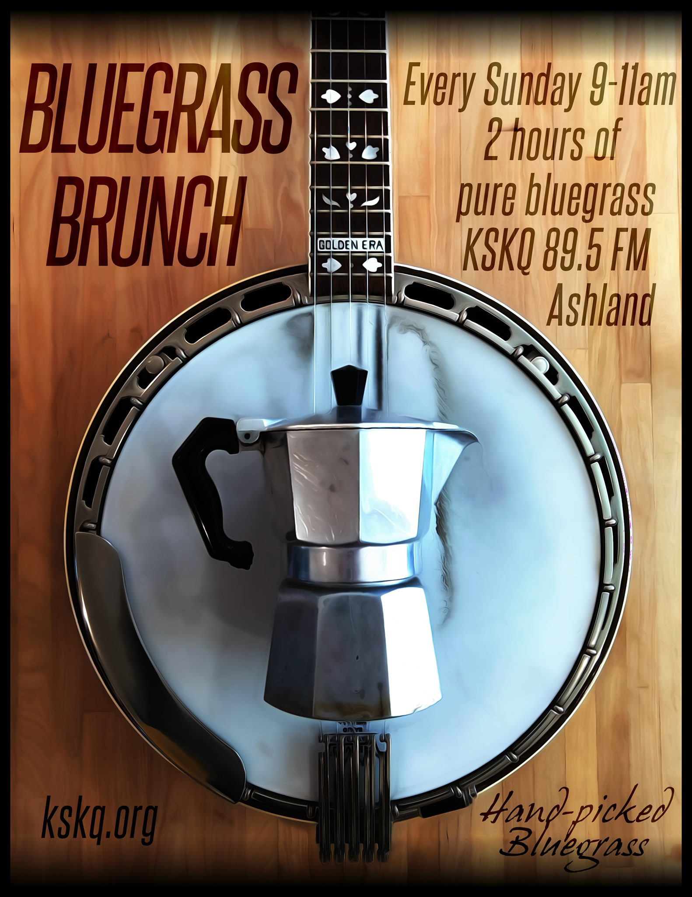

Community Radio
Bluegrass Brunch
Support community radio on KSKQ 89.5 FM in Ashland, Oregon.
Every Sunday Morning • 9:00 AM – 11:00 AM PT
Two hours of hand-picked bluegrass to go with your Sunday coffee.
Tune In at KSKQ.org →
Two hours of hand-picked bluegrass to go with your Sunday coffee.
Support Your Local Co-ops
Community-owned organizations building local resilience in Southern Oregon and beyond: